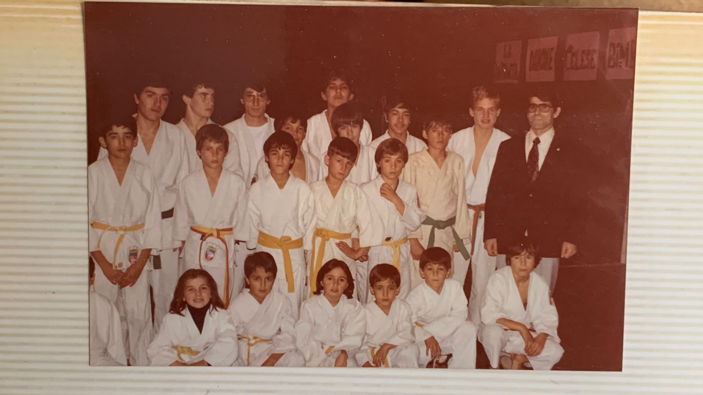

Sobre el club
De dónde venimos y qué nos mueve dentro y fuera del tatami.
Historia
[Sustituir la cronología por los hitos reales del club: año de fundación, primeras sedes, primeros alumnos, logros destacados.]
[Añadir aquí cómo y por qué se fundó el club, quiénes lo impulsaron.]
[Descripción del hito.]
[Descripción del hito.]
[Añadir número de socios y grupos actuales.]

Nuestros valores
Son los principios que trabajamos en cada clase, desde la escuela hasta la competición.
Sin respeto no hay confianza; sin confianza no hay nada.
Tratar a los demás con educación, dentro y fuera del tatami.
Afrontar los retos y el miedo a equivocarse con determinación.
Ser honesto con el compañero, con el rival y con uno mismo.
Ser fiel a la palabra dada y a los propios principios.
Hablar de uno mismo sin vanidad, ganar y perder con humildad.
Saber callar la ira, dominar la propia fuerza y actuar con calma.
El vínculo más sincero que puede unir a las personas.
Equipo técnico
Un equipo técnico titulado que acompaña a cada alumno desde su primera clase hasta la competición.
La máxima titulación técnica para la enseñanza del judo español.
Manuel San Segundo (6º Dan), Kike León (6º Dan) y Eduardo Pérez Morante (7º Dan)
Máxima titulación de enseñanza en defensa personal.
Manuel San Segundo
Titulación autonómica orientada a la competición.
Félix Fernández
Imparten sus propias clases en nuestras sedes.
Sara Iglesias, Aida Cuéllar, José Manuel Merino, Norbert Maskymilian, Felipe Baeza y Sonia García
Dirigen los combates en competiciones y jornadas del club.
Kike León, Sara Iglesias, Aida Cuéllar y José Luis Travesí
Árbitros de respaldo: Diego García y Norbert
Marcadores, cronometradores y anotadores de la hoja de combate.
María Elena Calle, César Pérez, Carla Merenciano, Edurne García, Candela García y otros compañeros del club
Ven a conocer nuestras instalaciones y prueba una clase con nosotros.